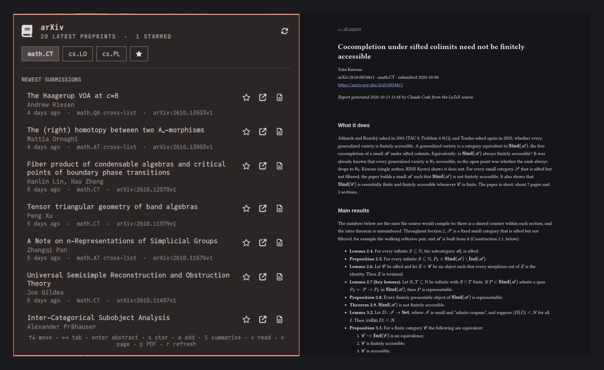
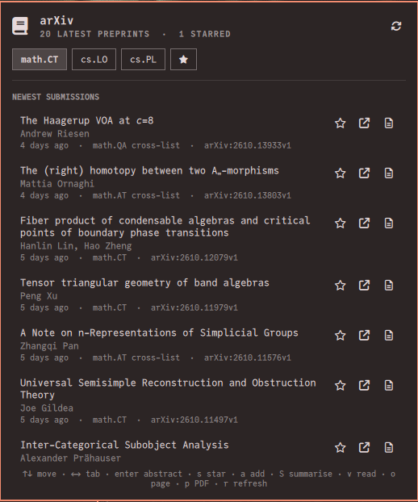
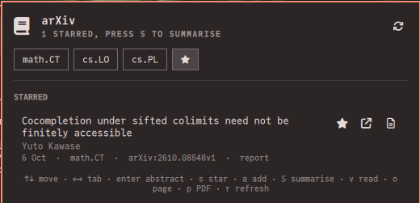
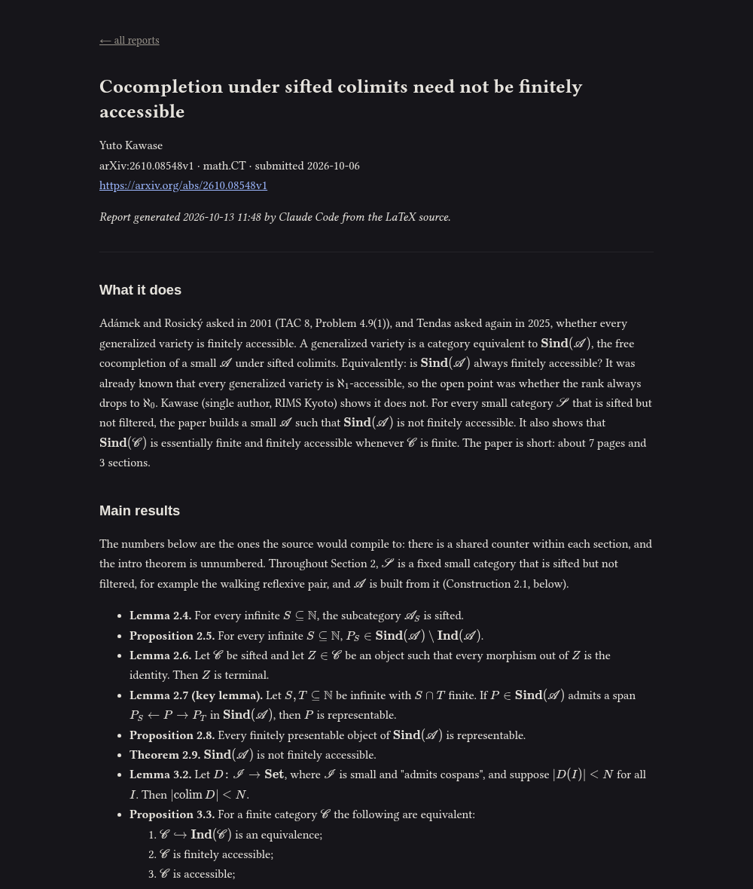

arXiv Assistant for Omarchy
The newest preprints of your arXiv categories in the Omarchy bar, and AI reading reports on the ones you star, written for your own expertise.

By installing this plugin you accept that it is your responsibility to
read and check its code before using it. Like every Omarchy plugin, it runs
unsandboxed inside omarchy-shell with your permissions.
What it does
Browse
One tab per arXiv category, newest submissions first: title, authors, date, cross-lists, and the abstract one keypress away. TeX in titles and abstracts is turned into readable symbols.
Star
Press s on a preprint, or a to star any paper by its identifier or link, however old.
Get reports
Press S: an AI reads each starred paper in full, from its LaTeX source when arXiv has it, and writes a Markdown report on it.
Read
Press v to read the reports in your browser with the mathematics typeset by KaTeX. The Markdown files stay yours.
Reports written for you
- Who they are for. Describe your expertise, such as “a working mathematician in categorical logic and type theory” or “an ML engineer who builds retrieval systems”, and each report is pitched at that level: nothing you know is explained, nothing you would not know is skipped.
- Report style. Theory states theorems with their hypotheses and sketches the proofs; Empirical reports claims with their numbers, the method and the evaluation; Auto adapts to the paper; or bring your own prompt.
- Your choice of AI. Claude Code, or any command that reads a prompt on standard input and prints Markdown. More on engines.
- Sandboxed by default. Claude Code can read only the paper being reported on, plus any folders you allow, such as your own notes, so a report can relate the paper to your work. It can never write files. How the sandbox works.
Quick start
omarchy plugin add https://github.com/pierrecagne/omarchy-arxiv.git --enable
omarchy bar set io.github.pierrecagne.arxiv categories "math.CT, cs.LO"
omarchy bar set io.github.pierrecagne.arxiv reader "a working mathematician in categorical logic"Then click the arXiv icon in the bar. Reports need an AI engine: see setting one up.
Screenshots


